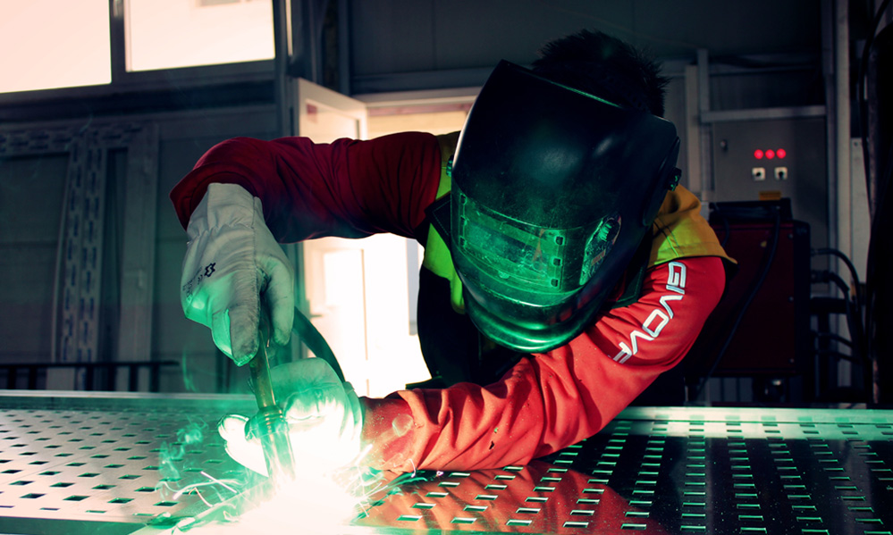

> 기술개발 > 신공법
신공법
굳건한 자리매김
사업역량 강화를 위한 제품 성능의 차별화 및 원가경쟁력 확보에 초점을 맞춰 기술개발 활동을 추진하고 있습니다
공법최적화
- 치수품질의 저하 및 생산성 감소 문제 해결
- 블록의 탑재공법이 메가블록 → 기가블록 → 테라블록 공법으로 점차 발전함에 따라 탑재 블록이 대형화되고 그 형상 또한 복잡해져 조립 난이도가 급격히 증가하였으며 이로 인한 치수품질의 저하 및 생산성 감소 문제를 해결하기 위해 대형블록의 안정적 치수품질을 확보할 수 있는 One-Time Setting 생산기술을 확보하였습니다.
자동화
- 크고 두꺼운 배관을 효율적으로 용접할 수 있는 공법
- Hot-Wire TIG 오비탈 용접공법은 기존 보다 3배 이상, FCAW 오비탈 용접공법은 기존보다 6배 이상 용접속도가 향상되었습니다. 또한, 배관 내부를 주행하며 용접 후 배관을 청소·검사 할 수 있는 장비를 개발하였으며 세계 최초로 옥외 작업장에서 배관 내부 방사선 검사를 수행하여 방사선 검사 시간과 피폭시간을 대폭 단축시켰습니다.